Educação InfantilBerçário, Maternal e Pré-Escola
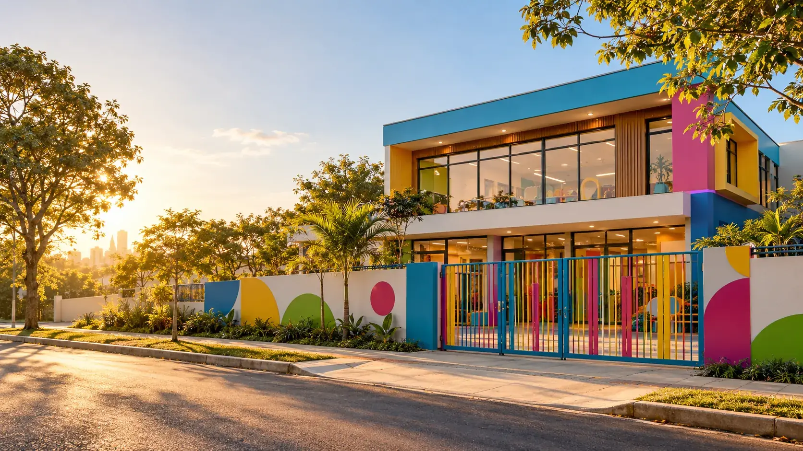
Acolher com carinho, ensinar com propósito.
Educação Infantil que combina afeto, cuidado de perto e uma base pedagógica sólida.
Dos primeiros meses às primeiras letras, cada criança é acompanhada no seu ritmo, com atenção individual e muita escuta.
Na {{nome_curto}}, o brincar é o ponto de partida, com uma proposta alinhada à BNCC e uma parceria próxima com cada família.
{{nota}} no Google{{avaliacoes}} avaliações de famílias
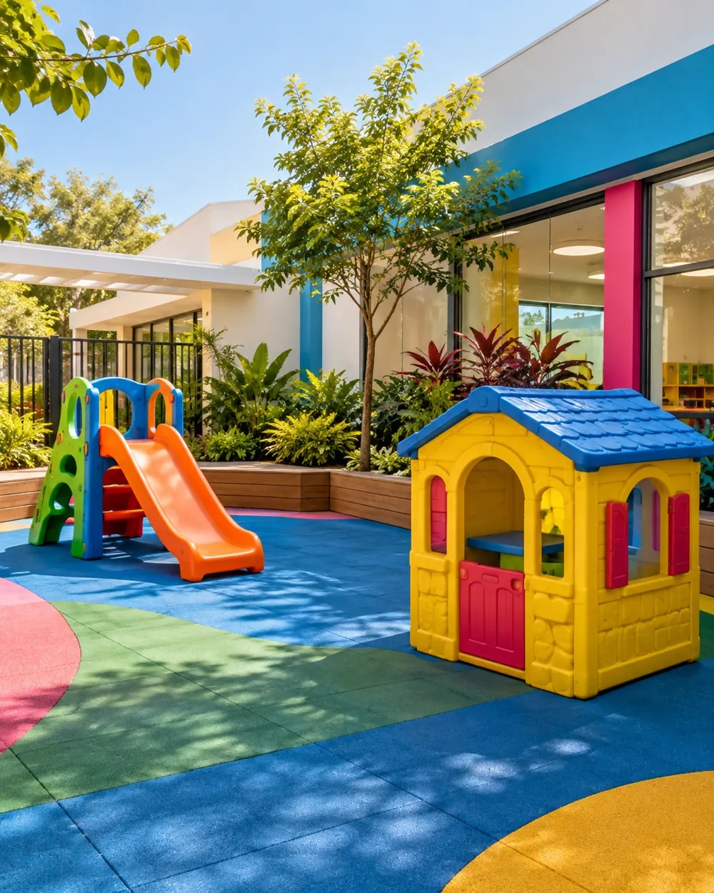
●Um lugar para crescer com segurança, afeto e alegria.
Uma escola que cresce com você
Uma história construída com cada família.
A {{nome_curto}} faz parte da rotina de muitas famílias, que confiam à escola os primeiros anos dos seus filhos.
Cada turma é acompanhada de perto, com uma equipe que conhece cada criança pelo nome, pelo jeito e pelas conquistas.
Reunimos Berçário, Maternal e Pré-Escola em um só lugar, com a proximidade e o cuidado de uma escola que conhece cada família.
Aqui, cada criança tem espaço para brincar, explorar, perguntar, conviver e ganhar autonomia, em um ambiente seguro e pensado para cada fase.
Educação que começa no afeto e acompanha cada conquista.
Nossa proposta
Aprender é viver, perguntar e criar.
Na {{nome_curto}}, a criança é protagonista da própria aprendizagem e participa de cada descoberta.
Partimos do brincar, das relações e da investigação para construir conhecimento com sentido.
O planejamento pedagógico segue a BNCC da Educação Infantil, equilibrando conteúdos, desenvolvimento emocional, criatividade e convivência.
Rotina organizada, alimentação cuidadosa e momentos de descanso completam um dia pensado para o bem-estar de cada criança.
Base pedagógica sólida
Planejamento alinhado à BNCC, com projetos que unem conteúdo, brincadeira e desenvolvimento integral.
Rotina acolhedora
Chegada, refeições, descanso e brincadeiras em uma rotina previsível, que dá segurança às crianças.
Alimentação cuidadosa
Refeições equilibradas e momentos à mesa que ensinam autonomia e bons hábitos desde cedo.
Horário que ajuda a família
Uma rotina pensada para combinar com o dia a dia de quem trabalha. Consulte os horários e turnos disponíveis.
Gestão presente
Direção e coordenação acompanham o dia a dia de perto e estão sempre disponíveis para as famílias.
Ambiente seguro
Espaços protegidos, entrada controlada e cuidado atento em cada canto pensado para crianças pequenas.
Aprender fazendo
Experiências, construções e investigações para testar hipóteses e desenvolver o raciocínio brincando.
Comunicação próxima
Registros da rotina, avisos e contato direto com a equipe, para a família acompanhar tudo de perto.
Adaptação no seu tempo
A adaptação é combinada com cada família e acontece aos poucos, com escuta e acompanhamento individual.
Cuidado socioemocional
Empatia, convivência, autonomia e expressão dos sentimentos fazem parte de todos os momentos do dia.
Segmentos
Cada etapa da infância merece um cuidado próprio.
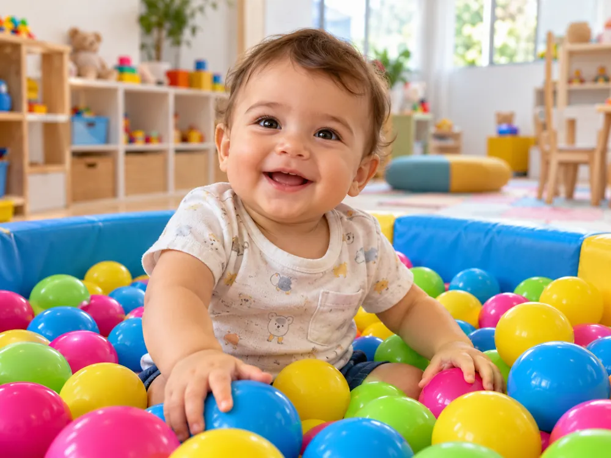
Bebês01
Berçário I
Vínculo, acolhimento e estímulos sensoriais para os primeiros movimentos e descobertas.
Sono, alimentação e rotina são combinados de perto com a família, respeitando cada bebê.
Música, colo e muitos estímulos.02
Berçário II
Uma fase de muitas conquistas: os primeiros passos, as primeiras palavras e mais interação com os colegas.
A exploração do espaço acontece com segurança e materiais pensados para a idade.
Movimento, exploração e vínculo.Pequenos
03
Maternal I
A linguagem se amplia e a criança quer fazer sozinha. Coordenação, comunicação e convivência ganham destaque.
Desfralde, autonomia à mesa e novas amizades são acompanhados com paciência.
04
Maternal II
Projetos, expressão artística e brincadeiras de faz de conta ampliam a autonomia e a curiosidade.
Pré-Escola
05
Pré-Escola I
As crianças investigam, levantam hipóteses, contam ideias e participam de projetos coletivos.
Raciocínio lógico, linguagem e pensamento crítico caminham juntos.
06
Pré-Escola II
A transição para o Ensino Fundamental é preparada com cuidado: escrita espontânea, matemática brincando e muitas linguagens.
Estrutura
Ambientes pensados para a infância florescer.
A {{nome_curto}} recebe as crianças em espaços planejados para segurança, autonomia, convivência e exploração.
Pensamos em cada detalhe:
- Salas arejadas e acolhedoras
- Mobiliário no tamanho da criança
- Banheiros adaptados para os pequenos
- Espaço para brincar ao ar livre
- Cantinho de leitura e brinquedos
- Espaço para as refeições
- Berçário com área de descanso
- Materiais pedagógicos para cada idade
- Ambientes protegidos para crianças pequenas
- Entrada e saída acompanhadas
Além da estrutura, a escola conta com uma equipe dedicada de direção, coordenação, professoras e auxiliares.
Conhecer a {{nome_curto}} →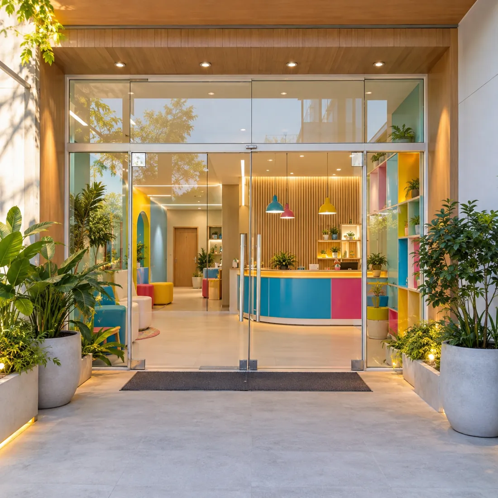
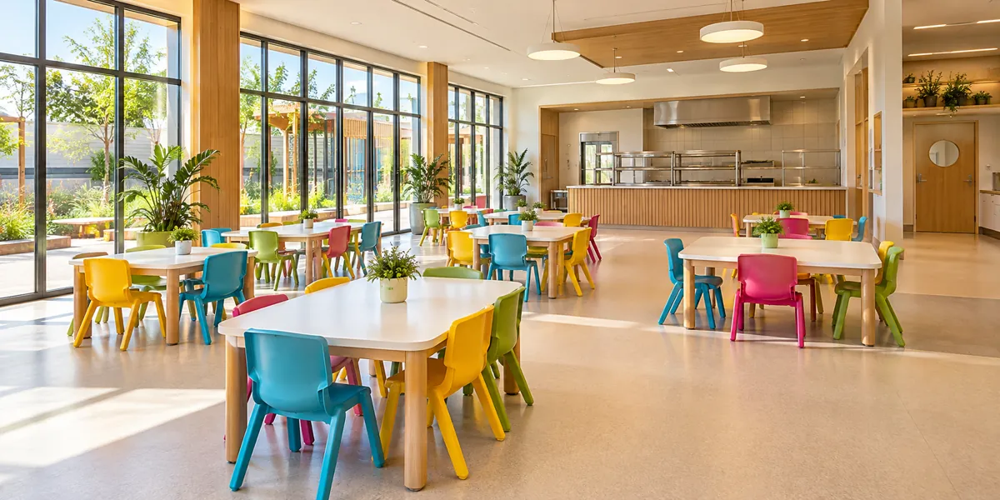
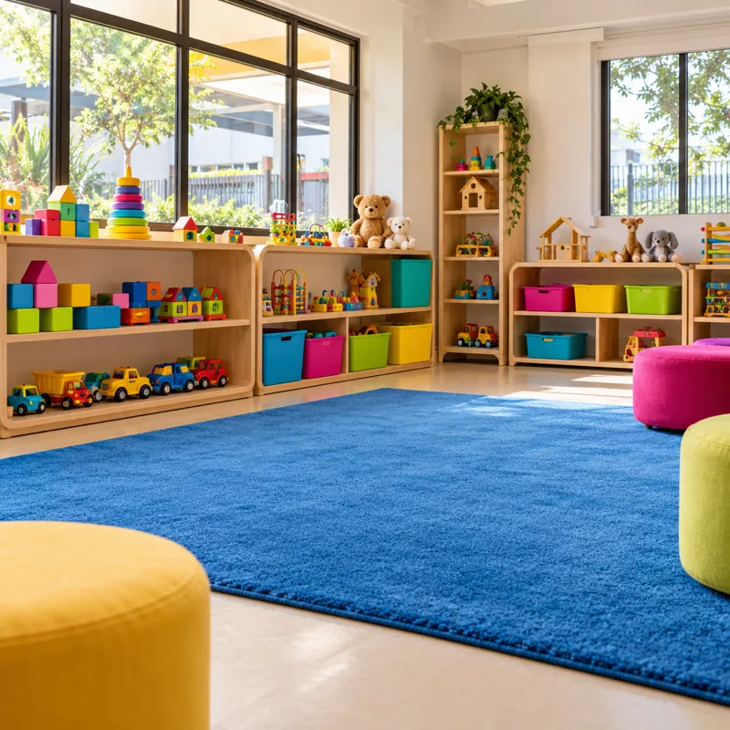
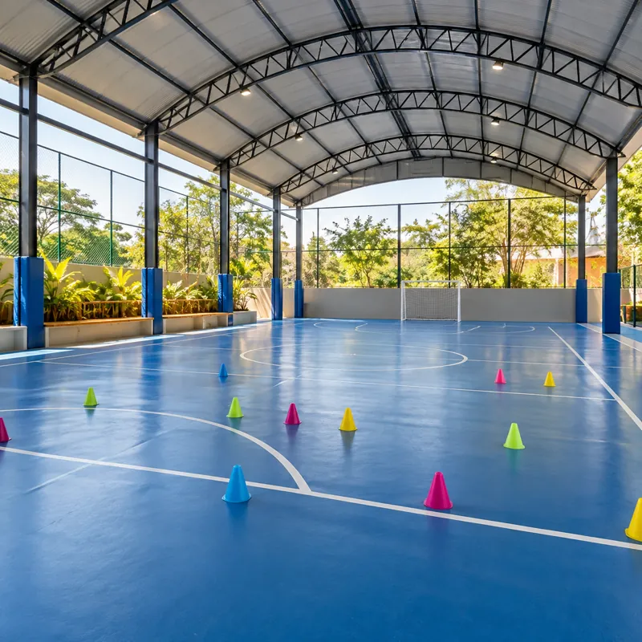
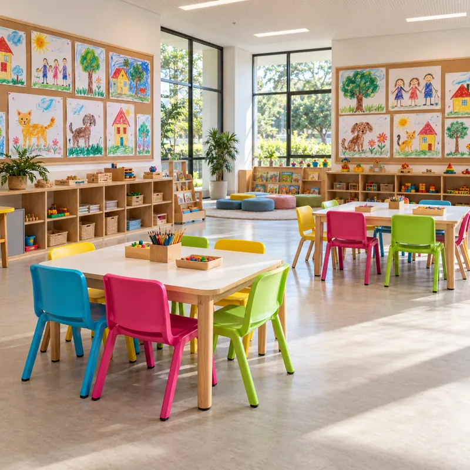
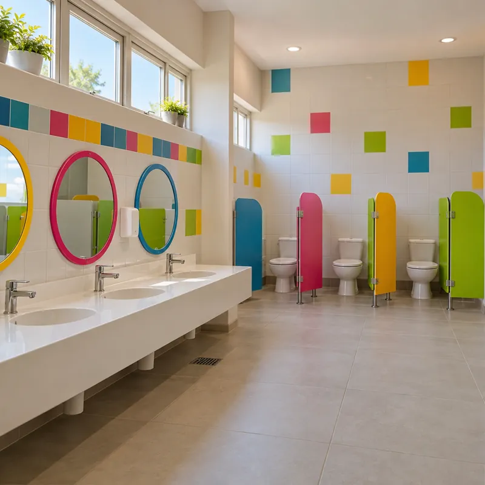
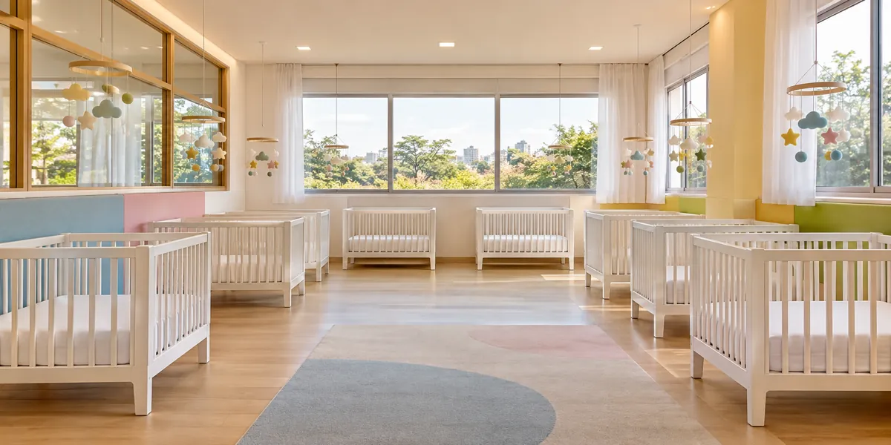
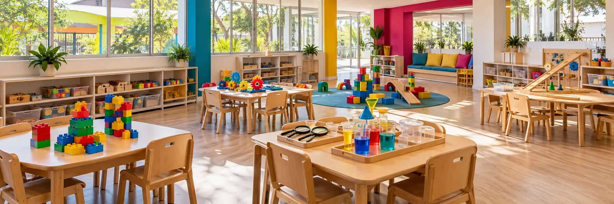
brincar
com a
gente
Avaliação e acompanhamento
Olhamos para o caminho, não só para o resultado.
Na Educação Infantil, avaliar é acompanhar. Nossa avaliação é contínua, individual e baseada no que a criança mostra no dia a dia.
O desenvolvimento é registrado ao longo do ano por meio de:
- Observação diária das professoras
- Registros e relatórios do desenvolvimento
- Encontros individuais com as famílias
Observamos o envolvimento nas propostas, a coordenação motora, a linguagem, as relações, as emoções, a autonomia e a forma de resolver problemas.
Cada criança é vista pelo que conquistou e pelo que ainda está construindo.
Família e escola
Juntos, educamos melhor.
Acreditamos que família e escola precisam andar lado a lado em cada fase.
Por isso, a comunicação é frequente e transparente sobre a rotina e o desenvolvimento de cada criança.
Avisos, registros e conversas com a equipe ficam sempre à mão, para a família acompanhar o dia a dia de perto.
Ao longo do ano, encontros, festas e apresentações trazem os pais para perto da vida escolar.
Saúde e segurança
Cuidar é também estar pronto.
Na {{nome_curto}}, a segurança começa na estrutura e continua em cada detalhe da rotina: entrada controlada, ambientes protegidos e atenção constante.
A equipe acompanha de perto a alimentação, o sono e o bem-estar das crianças, e qualquer novidade é comunicada à família na hora.
Mais segurança para a criança e mais tranquilidade para quem cuida dela.
Muito além da sala
Novos movimentos, talentos e descobertas.
Experiências variadas ampliam o repertório das crianças e trazem novas formas de aprender, se movimentar e se expressar.
Movimento
Equilíbrio, coordenação e controle do corpo.
Construção
Montar, encaixar e resolver pequenos desafios.
Dança
Ritmo, postura e expressão corporal.
Cultura
Músicas, brincadeiras e histórias do Brasil.
Jogos
Trabalho em equipe, regras e confiança.
Tudo conduzido com cuidado, em espaços preparados para crianças pequenas.
Vivências da rotina
Há muitas formas de aprender.
Durante a Educação Infantil, as crianças participam de experiências que desenvolvem diferentes áreas ao mesmo tempo.
Psicomotricidade
Equilíbrio, lateralidade e consciência do próprio corpo.
Música
Ritmo, escuta, sons e expressão dos sentimentos.
Artes
Pintura, modelagem, colagem, teatro e muitas outras linguagens.
Natureza
Plantio, observação e cuidado com o meio ambiente.
Leitura
Rodas de história e livros que aproximam as crianças do mundo das letras.
Faz de conta
Imaginação, papéis e brincadeiras que ensinam a conviver.
Culinária
Receitas simples que despertam os sentidos e hábitos saudáveis.
3etapasInfância
Uma trajetória completa
Do Berçário à Pré-Escola.
Na {{nome_curto}}, a criança pode viver toda a Educação Infantil com a mesma equipe e a mesma linha pedagógica.
Ela começa no Berçário e segue, etapa por etapa, até estar pronta para o Ensino Fundamental.
Isso vai além de continuar na mesma escola.
É crescer com uma proposta que une acolhimento, qualidade pedagógica e cuidado em cada nova fase.
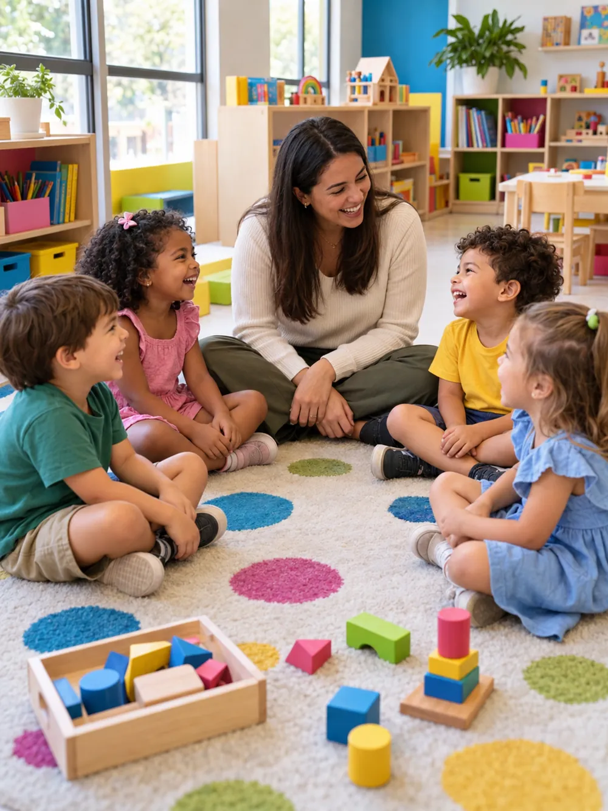
Por que escolher a {{nome_curto}}?
Porque confiar é o primeiro passo da educação.
A escola de Educação Infantil faz parte dos anos mais importantes da vida de uma criança.
Escolher onde seu filho vai estudar é muito mais do que comparar estrutura ou lista de atividades.
É encontrar uma escola com os mesmos valores da sua família, que traga segurança para a criança e tranquilidade para os pais.
Na {{nome_curto}}, reunimos:
carinho para acolher;qualidade para ensinar;uma rotina segura e organizada;e uma parceria verdadeira com cada família.
Tudo isso com uma proposta preparada para acompanhar seu filho em cada fase da infância.
Dúvidas frequentes
Tudo o que você precisa para escolher com segurança.
Respostas rápidas sobre a Educação Infantil da {{nome_curto}}.
Quais turmas a {{nome_curto}} atende?+
Atendemos a Educação Infantil, com turmas de Berçário, Maternal e Pré-Escola. Fale com a gente para saber as vagas de cada idade.
Qual é o horário de funcionamento?+
Funcionamos de {{horario}}.
Como funciona a adaptação?+
A adaptação é combinada com cada família e acontece aos poucos, respeitando o tempo da criança.
Onde fica a {{nome_curto}}?+
Na {{endereco_completo}}.
Como agendar uma visita?+
Preencha o formulário no topo desta página ou chame no WhatsApp {{whatsapp_fmt}}.
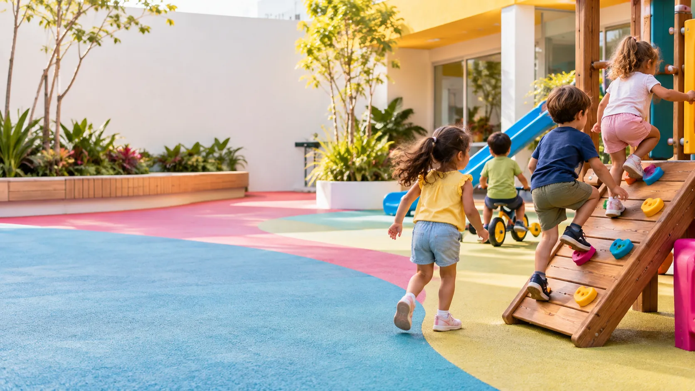
Agende sua visita.
{{nome}}
{{endereco}}
{{bairro}}, {{cidade}}
WhatsApp {{whatsapp_fmt}}
Telefone {{telefone_fmt}}
{{horario}} Agendar pelo WhatsApp
{{endereco}}
{{bairro}}, {{cidade}}
WhatsApp {{whatsapp_fmt}}
Telefone {{telefone_fmt}}
{{horario}} Agendar pelo WhatsApp